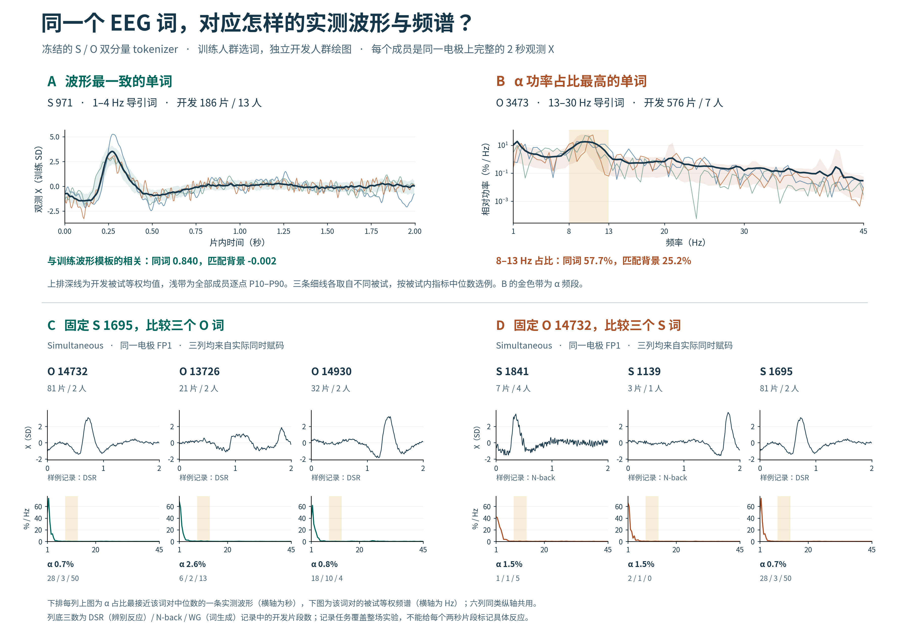
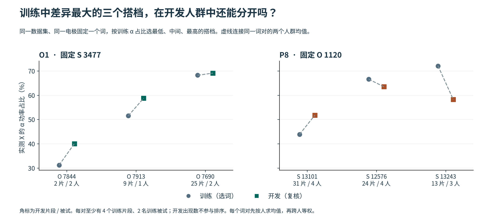

图 1 角色频带来自赋码器，所有曲线来自实测观测 X。各面板内可直接比较同一物理量；A 与下排波形分别定标。选例分母、对照与解读见下一页。
从 60 名训练被试的 222,885 个完整电极片段中，在两支共 2,619 个支持充分的 ID 中选两个极值。A 对每片去均值并除以其向量范数，按不同被试对等权计算所有成员间的平均有符号 Pearson 相关，全程保留时间原点与极性。S 971 的训练跨人两片相关为 0.688。以训练被试等权均形为冻结模板，开发成员与该模板相关为 0.840；它与训练两片之间的相关使用不同参照。
B 在每个 2 秒片段上去均值、乘 Hann 窗，求 [8,13) Hz 功率占 [1,45] Hz 功率的比例。按被试等权后，O 3473 的训练值为 63.4%，开发值为 57.7%。A 和 B 分别在开发集全部 780,210 个完整片段中提取成员，合计开发面板为 16 人。
每个成员从同一开发人、数据集、电极、局部 X RMS 档、分支、阶段和角色频带的其他词中等概率匹配一个背景片段，允许重复抽取。RMS 按 0.5、1、2 个训练标准差分档。按人等权，A 成员 / 背景相关为 0.840 / -0.002（匹配 186/186 片）；B 成员 / 背景 α 占比为 57.7% / 25.2%（576/576 片）。图中三个样例来自被试均值接近第 25、50、75 百分位的不同被试，各取最接近该人中位数的一片。
为使记录任务可比，C/D 限于 Simultaneous 数据集并固定电极。在训练中每对至少 4 片、2 人；对每个固定词取计数前三的搭档，以三对的最小片数、再以总片数最大选固定词。C/D 分别有 29 / 40 个“电极＋固定词”满足三个搭档要求。选择过程未用开发结果或任务标签。
| 面板 · 电极 | S + O | 训练 片/人 | 开发 片/人 | α 占比，训 → 开（%） | 开发记录 DSR / N-back / WG（片） |
|---|---|---|---|---|---|
| C · FP1 | 1695 + 14732 | 9 / 5 | 81 / 2 | 1.6 → 0.7 | 28 / 3 / 50 |
| C · FP1 | 1695 + 13726 | 9 / 4 | 21 / 2 | 3.1 → 2.6 | 6 / 2 / 13 |
| C · FP1 | 1695 + 14930 | 8 / 2 | 32 / 2 | 0.4 → 0.8 | 18 / 10 / 4 |
| D · FP1 | 1841 + 14732 | 10 / 9 | 7 / 4 | 2.0 → 1.5 | 1 / 1 / 5 |
| D · FP1 | 1139 + 14732 | 9 / 7 | 3 / 1 | 3.6 → 1.5 | 2 / 1 / 0 |
| D · FP1 | 1695 + 14732 | 9 / 5 | 81 / 2 | 1.6 → 0.7 | 28 / 3 / 50 |
| 已知词 | α 占比 MSE（百分点²），单词 → 词对 | 相对误差降低 | 任务负对数似然，单词 → 词对 | 降低量（nat） |
|---|---|---|---|---|
| 固定 S | 5.8 → 3.2 | +45.5% | 1.308 → 1.460 | -0.152 |
| 固定 O | 3.5 → 2.9 | +17.3% | 1.186 → 1.221 | -0.035 |
α 预测取训练成员的被试等权均值，先按开发被试、再按三个词对等权汇总平方误差。任务概率取训练记录计数，单词先对每类加 1，词对用 5 个按单词分布分配的伪计数平滑。在同一批开发成员上，平均负对数似然越低越好。每个方向只评价图中三个复现词对，正降低量表示搭档提供额外信息。

固定 S 3477（O1），训练高低端差 37.0 个百分点，开发同方向差为 +29.1 个百分点。两端开发分别为 2 片/2 人和 25 片/2 人。 固定 O 1120（P8），训练高低端差 28.2 个百分点，开发同方向差为 +6.5 个百分点。两端开发分别为 31 片/4 人和 13 片/3 人。
主图优先选择在训练中反复出现的配对；补图从相同候选中，优先选择训练被试等权 α 均值极差最大的固定词和电极。取其最低、最接近两端中点、最高的搭档，保留开发中的缺失和次序逆转。两个视图回答词对可复现性和最好条件下可区分程度两个问题。
CodeBrain 图 4 用同一 EEG patch 的时域与频域词展示成员及睡眠阶段共现。这里两支编码模型估计的 S/O 分量，按电极分配频带、传输导引词或条件残差。A、B 展示观测波形或谱形随词复现；C、D 展示同位置自然出现的分量词对。记录范式包含任务和间歇，这组比较衡量记录任务关联。A 的均形在约 0.11 秒有负谷、0.27 秒有正峰，可作为锁定片内位置的电位形态，定性归源仍需要事件或伪迹标注。B 在 10 Hz 附近有明显局部峰，低频仍有能量。主图加入搭档后，两个方向的 α 均方误差均降低，两个方向的任务负对数似然均升高。C、D 中有一对重复，六列共五种不同词对，单对的开发被试数为 1–4 人。数据和标签粒度的差异限制了两种模型间的数值比较。CodeBrain 图 4 与正文